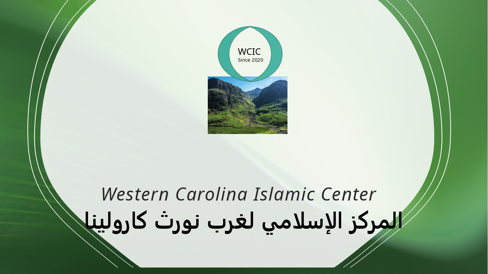

Our Vision:
To be a leading organization that helps facilitate the spiritual growth, serves the community, and acts as a community center in addition to being a masjid. Ultimately uniting everyone to make a better positive difference in the world.
Our Mission:
To develop community members who understand, and practice Islam based on the Qur'an and Sunnah; Conduct religious educational, social and other activities according to Islam. Promote unity and joint action among Muslims; endeavor to make Islam known to non-Muslims; Conduct the affairs of the Islamic Center.
"Together We Can Make a Positive Difference"
Address Info:
Currently, we are looking for a home for the center
Currently, we are looking for a home for the center
Contact Info:
Phone # 828 335 3650
Phone # 828 335 3650
Non-profit ID:
Legal Name: Western Carolina Islamic Center
Legal Name: Western Carolina Islamic Center